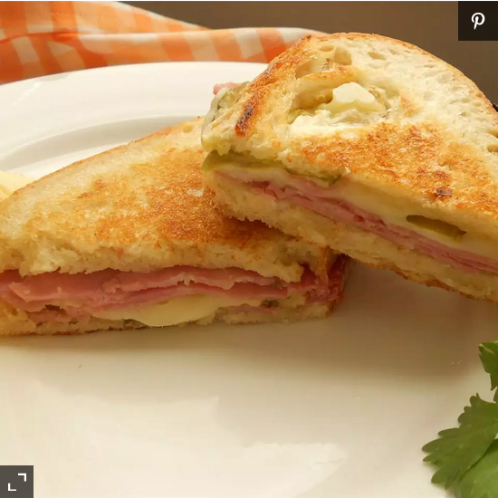

Sandwich

Description
This sandwich is called a 'Media Noche' which translates to 'Midnight.' It makes a wonderful dinner sandwich because it is served hot. A nice side dish is black bean soup or black beans and rice, and plantain chips.
Ingredients
- mayonnaise
- Italian dressing
- hoagie rolls, split lengthwise
Steps
- In a small bowl, mix together mayonnaise and Italian dressing. Spread mixture on hoagie rolls. Spread each roll with mustard. On each roll, arrange layers of turkey, ham, and cheese. Top each with dill pickle slices. Close sandwiches, and brush tops and bottoms with olive oil.
- Heat a non-stick skillet over medium high heat. Place sandwiches in skillet. Cook sandwiches for 2 minutes, pressing down with a plate covered with aluminum foil. Flip, and cook for 2 more minutes, or until cheese is melted. Remove from heat, place on plates, and cut in half diagonally.